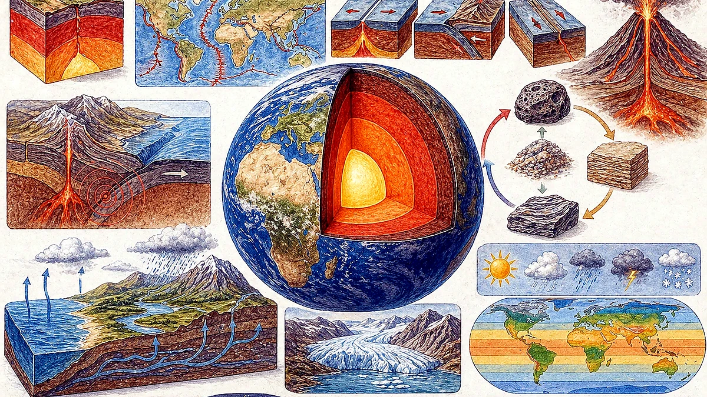
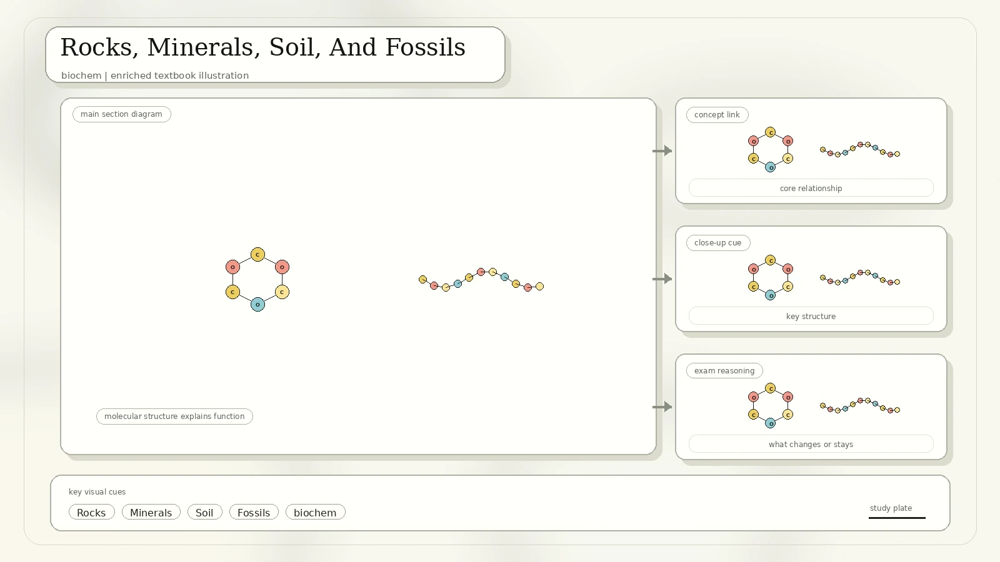
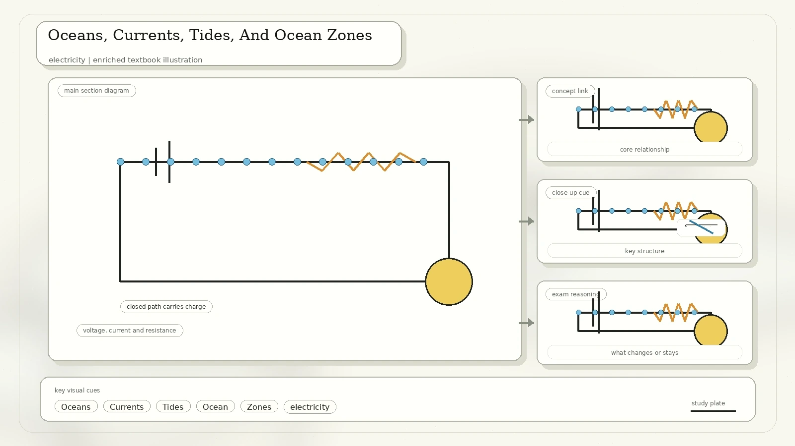
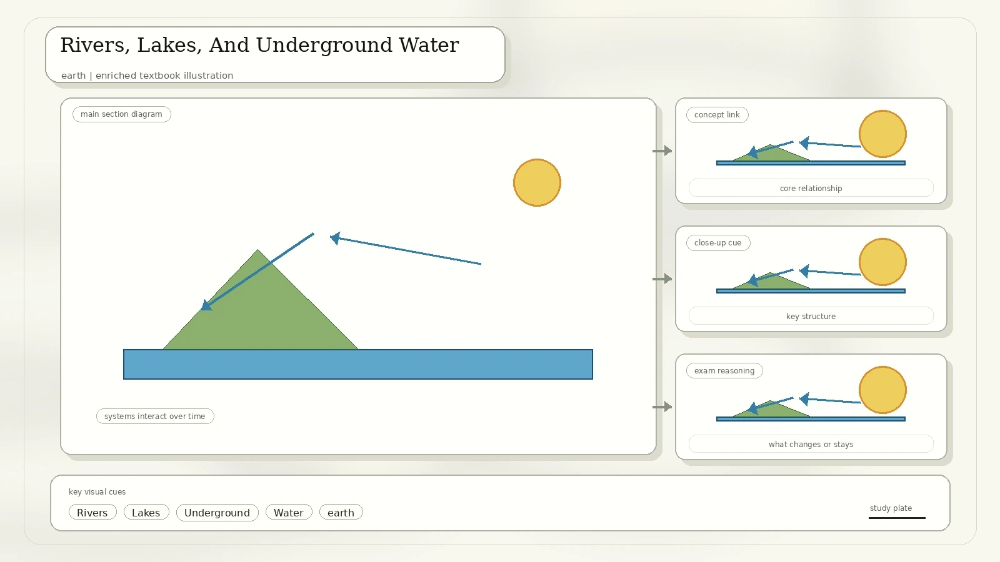
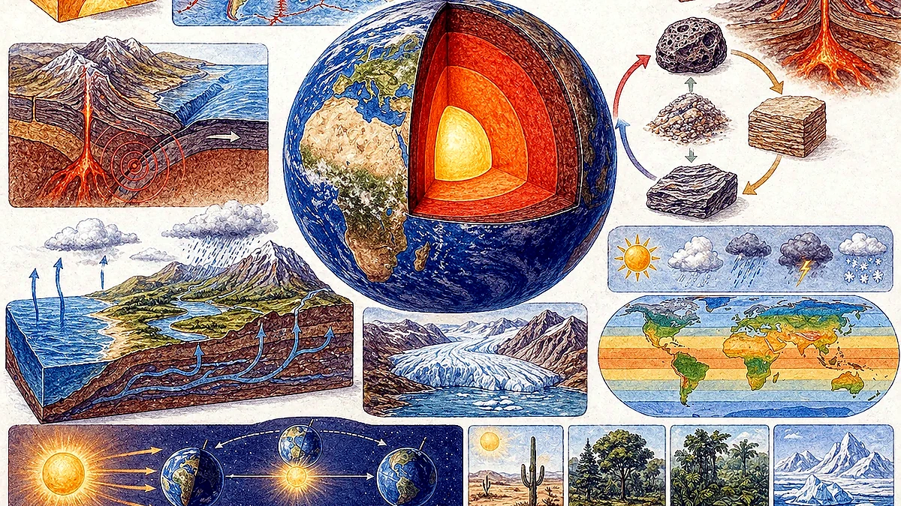
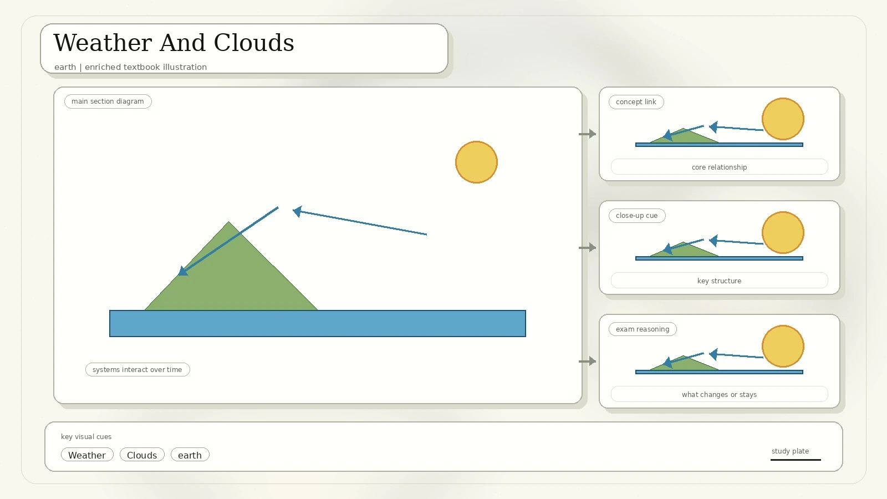
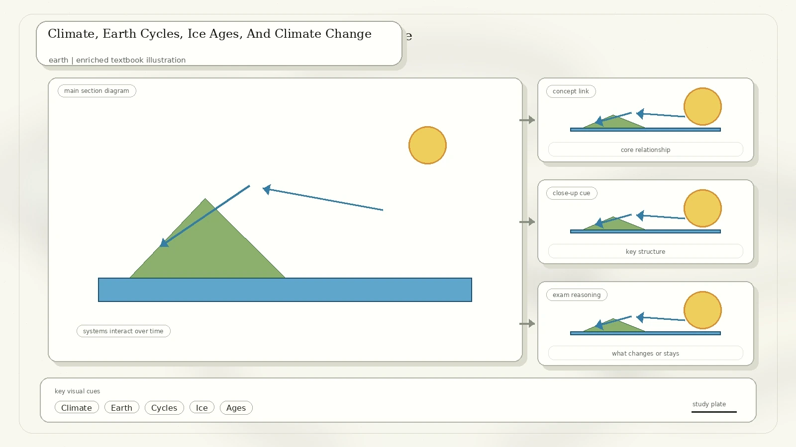

Planet Earth
Earth is shaped like a slightly squashed sphere. It is wider around the equator than from pole to pole because its rotation stretches it slightly. Earth rotates on its axis and revolves around the Sun in an elliptical orbit. Its axis is tilted about 23.44 degrees from the line perpendicular to its orbital plane.

One rotation takes about 24 hours and gives us day and night.
One revolution around the Sun takes about 365.25 days.
Seasons are caused mainly by Earth's tilt, not by large changes in distance from the Sun.
Earth's iron-rich core helps generate a magnetic field that protects the planet from some solar particles.
Atmosphere And Earth's Interior
The atmosphere is a blanket of gases surrounding Earth. It traps some warmth and light, keeps surface temperatures more stable, and protects living things from some harmful rays. Below the atmosphere, Earth is layered into crust, mantle, outer core, and inner core.

| Layer Or System | Main Description | Why It Matters |
|---|---|---|
| Crust | Thin rocky outer layer broken into tectonic plates. | We live on it; oceanic crust lies beneath oceans and continental crust beneath land. |
| Mantle | Mostly solid rock, with slow movement in softer mantle regions. | Plate motion is driven partly by heat and movement in the mantle. |
| Outer core | Liquid iron and nickel. | Movement of conducting material helps generate the magnetic field. |
| Inner core | Solid iron and nickel under immense pressure. | Even at high temperature, pressure keeps it solid. |
Plate Tectonics And Violent Earth
Plate tectonics explains the movement of the plates making up Earth's lithosphere. Plates diverge, collide, and slide past each other. These motions build mountains, form rift valleys and ocean trenches, and cause hazards such as earthquakes and volcanoes.

Pressure from plate movement folds and fractures rock layers, producing folded or block mountains.
Magma collects underground and may erupt through weak crust, especially near plate boundaries.
Stress builds along faults until rocks suddenly fracture or slip, releasing energy as seismic waves.
Rocks, Minerals, Soil, And Fossils
Rocks are made from minerals. Igneous rocks form from cooled molten material, sedimentary rocks form when particles or remains are pressed together, and metamorphic rocks form when existing rocks are changed by heat and pressure. Soil is made from rock particles, minerals, water, air, and organic matter.

| Topic | Converted Content | Extra Study Note |
|---|---|---|
| Minerals | More than 4,000 minerals are known, but only a few make up most of Earth's crust. | A mineral is a naturally occurring solid with a specific composition and structure. |
| Soil layers | Organic layer, subsoil, and bedrock are shown in the scan. | Soil fertility depends on mineral particles, humus, water, air, and organisms. |
| Fossils | Organisms can be buried by sediment; soft parts decay, hard parts remain, and sediment hardens into rock. | Fossils may be exposed later by erosion, uplift, or folding. |
Oceans, Currents, Tides, And Ocean Zones
More than 70 percent of Earth's surface is covered by water, mostly in oceans. The five oceans by size are Pacific, Atlantic, Indian, Southern, and Arctic. Ocean water is salty because it contains dissolved minerals.

Cold polar water sinks and flows through deep ocean regions, while warmer tropical water circulates near the surface.
Tides are caused mainly by gravitational pull between Earth and the Moon, with the Sun also contributing.
The photic zone receives light. Deeper twilight and dark zones support organisms adapted to low light and high pressure.
Rivers, Lakes, And Underground Water
Rivers and lakes hold only a small fraction of Earth's water, but they are crucial for freshwater supply, irrigation, sediment movement, and habitats. Rivers often begin in mountains, erode steep slopes, slow down on flatter land, and deposit sediment.

Permeable rocks can store groundwater like a sponge, while impermeable rocks block water movement.
Limestone can dissolve slowly, forming caves, sinkholes, stalactites, and stalagmites.
Ice, Glaciers, And Water Quality
A glacier is a slow-moving river of ice. Glaciers are found mainly in polar regions and high mountains, cover about one-tenth of Earth's surface, and hold much of Earth's freshwater. As glaciers move, their weight erodes rock beneath and carries debris.

| Water Topic | Meaning | Indicator Or Example |
|---|---|---|
| Iceberg | A large piece of glacier ice that breaks off and falls into the sea. | Many are found around Antarctica and Greenland. |
| Water quality | Chemical, physical, and biological characteristics of water based on its use. | Drinking-water indicators include salinity and disease-causing organisms. |
| Total dissolved solids | A measure of dissolved inorganic and organic substances in a liquid. | High TDS may affect taste, safety, or suitability for use. |
Weather And Clouds
Weather means day-to-day outdoor conditions. Sunlight heats Earth's atmosphere unevenly, and moving air and water create changing weather. Winds are influenced by Earth's spin and are named after the direction from which they blow.

| Cloud Type | Scan Description | Memory Hook |
|---|---|---|
| Stratus | A sheet of low-lying cloud, often seen as mist or fog. | Stratus means spread out in layers. |
| Cumulus | Puffy white clouds, often seen on sunny days. | Cumulus looks like a heap. |
| Cirrus | Wispy high-altitude clouds made of ice crystals. | Cirrus looks like thin hair. |
| Cumulonimbus | Gray rain clouds formed from growing cumulus clouds. | Associated with storms and heavy rain. |
Climate, Earth Cycles, Ice Ages, And Climate Change
Climate is the typical weather of a place. Places nearer the equator are generally hotter; places higher above sea level are usually colder; and inland areas are often drier than coastal areas because oceans supply moisture.

Earth's orbit changes shape over long cycles, affecting annual temperature patterns.
Earth's tilted axis gives seasons and changes slightly over long timescales.
The orientation of Earth's axis changes over a long cycle, altering seasonal timing.
Modern global warming is long-term heating of Earth's climate system, largely from human greenhouse-gas emissions since the industrial period.
Greenhouse gases in the scan: water vapour, carbon dioxide, methane, and nitrous oxide. These gases trap heat, but human activity has increased several of them beyond natural background levels.
Review Questions
Outline Earth's layers from crust to inner core and describe one property of each.
Explain how water moves through oceans, rivers, lakes, glaciers, groundwater, and the atmosphere.
List the main layers of the atmosphere and locate the ozone layer.
Connect plate boundaries to volcanoes, earthquakes, mountains, and trenches.
Source converted from IMG_20260427_0035.pdf. The scan was reorganized into Earth systems so the geology, water, weather, and climate ideas are easier to review together.